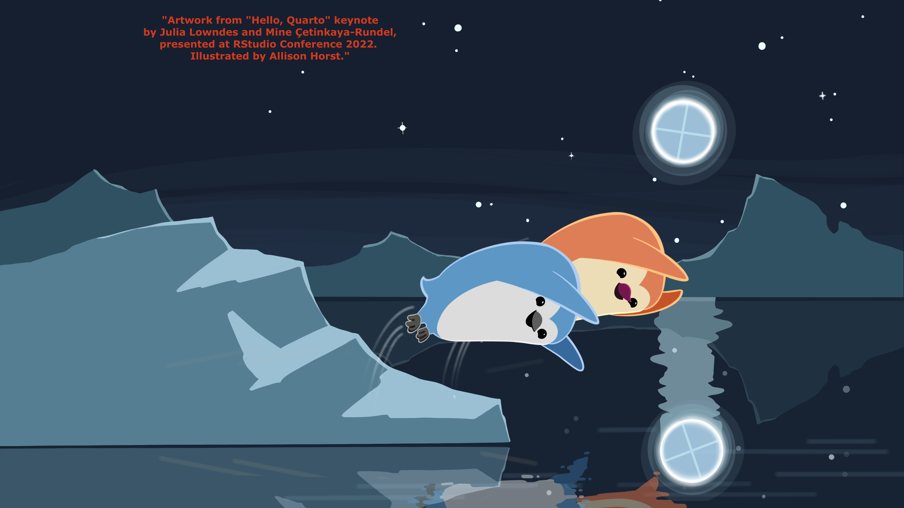

¿Qué es quarto?
Quarto® es un sistema de publicación científica y técnica de código abierto basado en Pandoc Puede entretejer texto narrativo y código para producir resultados con un formato elegante como documentos, páginas web, publicaciones de BLOG_QMD, libros y más.
Quarto es la próxima generación de RMarkdown para publicación, que incluye documentos dinámicos y estáticos y compatibilidad con lenguajes de programación multilingües (Python, R, bash).
En otras palabras:es un sistema que permite la integración de código en documentos de texto plano y que evolucionó para crear diferentes formatos de texto con integración para otros lenguajes de programación.
¿Qué vamos a aprender aquí?
Empezaremos con el template para la bendita tesis. El template/tesis lo iremos trabajando conforme vayan surguiendo las dudas, casi siempre cuando ya estás escribiendo es que necesitamos saber cómo se hace esto y aquello. Además del template veremos de todo lo relacionado a la construcción de un artículo tipo ploscon Quarto.
Aquí los links para instalar los programas
Install latest version of Quarto (v1.0.36 or greater)
Descargar Rstudio si va a trabajar desde ahí. Se puede utilizar la terminal, VS-code.
[Rstudio](https://posit.co/download/rstudio-desktop/#download)Idealmente actualizar/usar a R 4.1 or R 4.2
Utilizar template de plos_journal git_plos
quarto use template quarto-journals/plos
quarto render article.qmd Una vez que instalas o usas el template, se generan archivos necesarios para utilizar el template.☂️
Para empezar, en el archivo .qmd ahí se va a guardar el texto de tu artículo, junto con un pequeño código de configuración al principio
Tablas
Las tablas son muy importantes, entonces… En esta página puedes copiar desde un archivo excel la tabla que ya está escrita o ir rellenado la tabla de acuerdo a lo que tú necesites Y te regresa un formato para quarto * Tablas Markdown * Kable para un formato más padre.
```{markdown}
| Right | Left | Default | Center |
|------:|:-----|---------|:------:|
| 12 | 12 | 12 | 12 |
| 123 | 123 | 123 | 123 |
| 1 | 1 | 1 | 1 |
: Table Column Widths {tbl-colwidths="[10,30,30,30]"}
#checar los puntitos en cada pipe (|) por ejemplo; |---: significa a la derecha, así :---: centro
```| Right | Left | Default | Center |
|---|---|---|---|
| 12 | 12 | 12 | 12 |
| 123 | 123 | 123 | 123 |
| 1 | 1 | 1 | 1 |
Aquí para los direntes tipos de journals
Aquí una nota para justificar texto o alinear
Quarto
Parafraseando…:
Quarto enables you to weave together content and executable code into a finished document. To learn more about Quarto see https://quarto.org.
Quarto is based on Pandoc and uses its variation of markdown as its underlying document syntax. Pandoc markdown is an extended and slightly revised version of John Gruber’s Markdown syntax and Markdown is a plain text format.
Markdown is a plain text format that is designed to be easy to write, and, even more importantly, easy to read